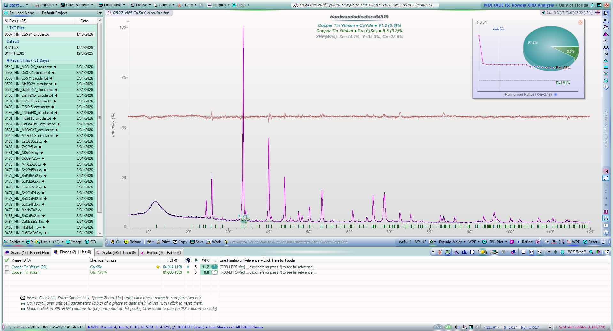
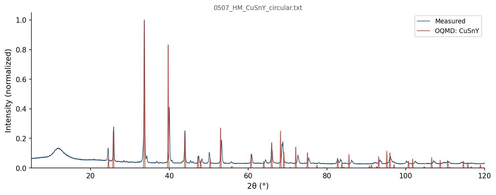
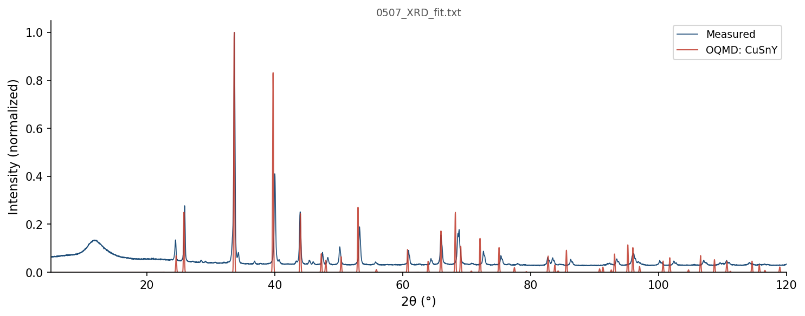

| Element | Expected (mol frac) | Measured (mol frac) | Δ (mol frac) | Δ (%) |
|---|---|---|---|---|
| Cu | 0.3333 | 0.3332 | -0.0001 | -0.01% |
| Sn | 0.3333 | 0.3357 | +0.0023 | +0.23% |
| Y | 0.3333 | 0.3311 | -0.0023 | -0.23% |
366 OQMD entries in the Cu-Sn-Y element system (21 on hull, 59 ICSD-tagged). OQMD: negative = below hull (stable). Sorted most stable first.
| Composition | Stability (meV/atom) | ΔE (meV/atom) | ICSD | Space | Entry | CIF |
|---|---|---|---|---|---|---|
Sn3Y5 |
-81 | -805.1 | ✓ | Sn-Y | 31089 | CIF |
Cu1Sn1Y1 |
-69 | -647.6 | Cu-Sn-Y | 1468383 | CIF | |
Cu1Y1 |
-44 | -260.0 | ✓ | Cu-Y | 2012358 | CIF |
Sn2Y1 |
-24 | -669.2 | ✓ | Sn-Y | 26304 | CIF |
Cu2Y1 |
-19 | -263.5 | ✓ | Cu-Y | 22909 | CIF |
Cu1Sn4 |
-17 | -45.8 | Cu-Sn | 1341041 | CIF | |
Cu4Sn4Y3 |
-17 | -559.7 | ✓ | Cu-Sn-Y | 27582 | CIF |
Cu1Sn1 |
-14 | -72.7 | ✓ | Cu-Sn | 29804 | CIF |
Cu5Y1 |
-13 | -192.1 | ✓ | Cu-Y | 29828 | CIF |
Sn4Y5 |
-13 | -826.0 | ✓ | Sn-Y | 2053253 | CIF |
Sn1Y1 |
-11 | -810.0 | Sn-Y | 1372829 | CIF | |
Sn5Y2 |
-9 | -592.3 | Sn-Y | 1484182 | CIF | |
Cu4Y1 |
-6 | -212.1 | Cu-Y | 2132079 | CIF | |
Sn10Y11 |
+0 | -817.3 | ✓ | Sn-Y | 2053254 | CIF |
Cu1 |
+0 | 0.0 | Cu | 2072241 | CIF | |
Cu1 |
+0 | 0.0 | Cu | 2066481 | CIF | |
Cu1 |
+0 | 0.0 | ✓ | Cu | 635950 | CIF |
Sn1 |
+0 | 0.0 | Sn | 1215552 | CIF | |
Y1 |
+0 | 0.0 | Y | 1215387 | CIF | |
Y1 |
+0 | 0.0 | ✓ | Y | 2015273 | CIF |
Y1 |
+0 | 0.0 | ✓ | Y | 2030142 | CIF |
Cu1Sn1Y1 |
+0 | -647.5 | ✓ | Cu-Sn-Y | 26268 | CIF |
Cu1 |
+0 | 0.1 | Cu | 2066479 | CIF | |
Y1 |
+0 | 0.1 | ✓ | Y | 51193 | CIF |
Cu1 |
+0 | 0.3 | ✓ | Cu | 592441 | CIF |
Cu1 |
+0 | 0.3 | ✓ | Cu | 593869 | CIF |
Cu1 |
+0 | 0.3 | ✓ | Cu | 598513 | CIF |
Cu1 |
+0 | 0.4 | ✓ | Cu | 594520 | CIF |
Cu1 |
+0 | 0.5 | ✓ | Cu | 594301 | CIF |
Cu1 |
+0 | 0.5 | Cu | 1214520 | CIF | |
Cu1 |
+1 | 0.5 | ✓ | Cu | 594302 | CIF |
Y1 |
+1 | 0.7 | ✓ | Y | 8147 | CIF |
Cu1 |
+1 | 0.8 | ✓ | Cu | 594518 | CIF |
Cu1 |
+1 | 0.8 | ✓ | Cu | 594517 | CIF |
Cu1 |
+1 | 0.9 | ✓ | Cu | 594519 | CIF |
Cu1 |
+1 | 1.1 | Cu | 2072238 | CIF | |
Cu1 |
+1 | 1.3 | Cu | 2072237 | CIF | |
Cu1 |
+1 | 1.3 | Cu | 2074487 | CIF | |
Cu1 |
+2 | 1.6 | Cu | 2072239 | CIF | |
Cu1 |
+2 | 1.7 | Cu | 2072235 | CIF | |
Cu1Sn6Y2 |
+2 | -474.9 | Cu-Sn-Y | 1907645 | CIF | |
Cu1 |
+2 | 2.2 | Cu | 2072240 | CIF | |
Y1 |
+2 | 2.2 | Y | 1216103 | CIF | |
Cu1 |
+2 | 2.5 | Cu | 2072236 | CIF | |
Cu1 |
+3 | 2.7 | Cu | 2072225 | CIF | |
Cu1 |
+3 | 2.7 | Cu | 2072242 | CIF | |
Cu1 |
+3 | 2.8 | Cu | 2072249 | CIF | |
Cu1 |
+3 | 2.8 | Cu | 2072243 | CIF | |
Cu1 |
+3 | 2.9 | Cu | 1215678 | CIF | |
Cu1 |
+3 | 3.0 | Cu | 2072244 | CIF | |
Cu17Y2 |
+3 | -118.3 | Cu-Y | 1453224 | CIF | |
Sn7Y3 |
+3 | -612.3 | Sn-Y | 1453991 | CIF | |
Sn1 |
+3 | 3.4 | ✓ | Sn | 676081 | CIF |
Cu1 |
+4 | 3.6 | Cu | 2072245 | CIF | |
Cu124Sn1 |
+4 | 2.5 | Cu-Sn | 2070168 | CIF | |
Cu1 |
+4 | 4.0 | Cu | 2072248 | CIF | |
Cu1 |
+4 | 4.3 | Cu | 2072227 | CIF | |
Cu1 |
+5 | 4.6 | Cu | 2072247 | CIF | |
Y1 |
+5 | 4.6 | ✓ | Y | 83105 | CIF |
Cu1 |
+5 | 4.7 | Cu | 2072228 | CIF | |
Cu6Sn5 |
+5 | -60.9 | ✓ | Cu-Sn | 18303 | CIF |
Y1 |
+6 | 5.6 | Y | 1215298 | CIF | |
Cu1 |
+6 | 5.6 | Cu | 1215411 | CIF | |
Cu1 |
+6 | 5.9 | Cu | 2072250 | CIF | |
Cu1 |
+6 | 6.1 | Cu | 2072229 | CIF | |
Cu1 |
+6 | 6.2 | Cu | 1216034 | CIF | |
Y1 |
+7 | 6.8 | Y | 1215477 | CIF | |
Cu1 |
+7 | 6.9 | Cu | 2072232 | CIF | |
Cu1 |
+8 | 7.5 | Cu | 1215321 | CIF | |
Cu1 |
+8 | 7.6 | Cu | 2072230 | CIF | |
Cu5Sn4 |
+8 | -57.0 | ✓ | Cu-Sn | 94008 | CIF |
Cu5Sn4 |
+8 | -56.7 | ✓ | Cu-Sn | 2046400 | CIF |
Cu1Y8 |
+8 | -49.9 | Cu-Y | 1519392 | CIF | |
Cu5Y3 |
+8 | -254.4 | Cu-Y | 1339133 | CIF | |
Cu1 |
+8 | 8.3 | Cu | 1520484 | CIF | |
Cu1 |
+8 | 8.4 | Cu | 2072252 | CIF | |
Cu1Y2 |
+9 | -164.8 | Cu-Y | 1800614 | CIF | |
Cu1 |
+9 | 9.0 | Cu | 2072251 | CIF | |
Cu1 |
+9 | 9.0 | Cu | 2072233 | CIF | |
Cu3Sn1 |
+9 | -27.3 | ✓ | Cu-Sn | 2046398 | CIF |
Cu17Y2 |
+10 | -111.8 | Cu-Y | 1340935 | CIF | |
Cu2Y1 |
+10 | -253.7 | Cu-Y | 1435013 | CIF | |
Cu5Sn4 |
+10 | -54.5 | ✓ | Cu-Sn | 19223 | CIF |
Sn3Y4 |
+11 | -810.7 | Sn-Y | 1479311 | CIF | |
Cu1 |
+11 | 11.0 | Cu | 2072234 | CIF | |
Cu3Sn1 |
+12 | -24.2 | ✓ | Cu-Sn | 20569 | CIF |
Cu1 |
+13 | 12.6 | Cu | 2072231 | CIF | |
Cu12Y1 |
+13 | -75.9 | Cu-Y | 1454230 | CIF | |
Cu1 |
+13 | 12.8 | Cu | 2072253 | CIF | |
Cu1 |
+13 | 13.1 | Cu | 2072226 | CIF | |
Cu1 |
+14 | 14.3 | Cu | 2072254 | CIF | |
Cu1Sn3 |
+14 | -35.9 | Cu-Sn | 1799573 | CIF | |
Cu3Sn1 |
+15 | -21.3 | ✓ | Cu-Sn | 17164 | CIF |
Cu1Y3 |
+15 | -114.8 | Cu-Y | 1787170 | CIF | |
Cu1Y1 |
+16 | -244.0 | ✓ | Cu-Y | 88957 | CIF |
Cu1Y1 |
+16 | -243.9 | ✓ | Cu-Y | 20721 | CIF |
Cu1Y1 |
+16 | -243.5 | Cu-Y | 305541 | CIF | |
Cu3Sn1 |
+17 | -19.4 | Cu-Sn | 323351 | CIF | |
Cu5Y1 |
+17 | -174.6 | Cu-Y | 1784225 | CIF | |
Cu1Sn2 |
+19 | -39.2 | Cu-Sn | 1435988 | CIF | |
Sn2Y1 |
+19 | -650.6 | Sn-Y | 1795036 | CIF | |
Cu1 |
+19 | 18.7 | Cu | 1215232 | CIF | |
Cu10Sn3 |
+19 | -14.8 | ✓ | Cu-Sn | 1986 | CIF |
Sn4Y3 |
+19 | -730.8 | Sn-Y | 1796481 | CIF | |
Cu1 |
+19 | 19.1 | Cu | 2072246 | CIF | |
Cu2Sn3 |
+20 | -43.9 | Cu-Sn | 1965837 | CIF | |
Cu1Sn2 |
+20 | -37.5 | Cu-Sn | 1520657 | CIF | |
Sn3Y1 |
+23 | -495.5 | Sn-Y | 345135 | CIF | |
Cu1Sn1Y1 |
+23 | -624.5 | Cu-Sn-Y | 1467949 | CIF | |
Sn3Y1 |
+24 | -494.8 | ✓ | Sn-Y | 18135 | CIF |
Cu3Sn4 |
+24 | -42.2 | Cu-Sn | 1791996 | CIF | |
Y1 |
+24 | 24.1 | Y | 1214586 | CIF | |
Y1 |
+24 | 24.3 | ✓ | Y | 685034 | CIF |
Y1 |
+25 | 25.2 | Y | 1215922 | CIF | |
Y1 |
+26 | 26.0 | Y | 1215744 | CIF | |
Y1 |
+30 | 30.4 | ✓ | Y | 2037981 | CIF |
Cu7Y2 |
+31 | -189.6 | Cu-Y | 1791788 | CIF | |
Cu6Y5 |
+32 | -228.7 | Cu-Y | 2131884 | CIF | |
Y1 |
+34 | 33.7 | Y | 1214675 | CIF | |
Y1 |
+34 | 34.2 | Y | 1215833 | CIF | |
Cu1 |
+35 | 35.1 | ✓ | Cu | 637373 | CIF |
Cu1 |
+35 | 35.5 | Cu | 1522153 | CIF | |
Cu1 |
+35 | 35.5 | Cu | 1522150 | CIF | |
Cu1 |
+36 | 36.3 | Cu | 1214609 | CIF | |
Cu1Sn1Y1 |
+37 | -611.1 | Cu-Sn-Y | 1469419 | CIF | |
Cu1Sn1Y1 |
+37 | -610.9 | Cu-Sn-Y | 1469875 | CIF | |
Cu1Sn1Y1 |
+37 | -610.7 | ✓ | Cu-Sn-Y | 29812 | CIF |
Cu1 |
+37 | 37.0 | Cu | 1215143 | CIF | |
Cu13Y1 |
+39 | -42.9 | Cu-Y | 1277913 | CIF | |
Cu10Sn3 |
+40 | 6.1 | ✓ | Cu-Sn | 17165 | CIF |
Cu3Sn2 |
+40 | -18.5 | Cu-Sn | 1797421 | CIF | |
Cu3Sn2 |
+41 | -17.6 | Cu-Sn | 1793838 | CIF | |
Cu15Sn1 |
+41 | 32.3 | Cu-Sn | 2062043 | CIF | |
Cu3Y1 |
+42 | -189.2 | Cu-Y | 1821338 | CIF | |
Sn1 |
+42 | 42.4 | Sn | 1215641 | CIF | |
Sn4Y5 |
+44 | -782.2 | Sn-Y | 1484159 | CIF | |
Sn1 |
+44 | 43.9 | ✓ | Sn | 685019 | CIF |
Sn1 |
+44 | 44.0 | ✓ | Sn | 687653 | CIF |
Cu3Y1 |
+47 | -184.4 | Cu-Y | 1782392 | CIF | |
Cu15Sn1 |
+48 | 38.4 | Cu-Sn | 2062056 | CIF | |
Cu2Sn2Y1 |
+50 | -379.5 | ✓ | Cu-Sn-Y | 27497 | CIF |
Sn3Y1 |
+51 | -467.2 | Sn-Y | 1795557 | CIF | |
Sn3Y1 |
+55 | -463.6 | Sn-Y | 320649 | CIF | |
Cu10Sn1 |
+55 | 41.6 | Cu-Sn | 1893098 | CIF | |
Cu1 |
+55 | 54.9 | Cu | 2054435 | CIF | |
Sn3Y1 |
+57 | -461.1 | Sn-Y | 300552 | CIF | |
Cu2Sn1 |
+57 | 8.8 | Cu-Sn | 1591191 | CIF | |
Cu15Sn1 |
+58 | 48.8 | Cu-Sn | 2062070 | CIF | |
Cu17Sn1 |
+58 | 49.8 | Cu-Sn | 2062514 | CIF | |
Cu17Sn1 |
+58 | 49.8 | Cu-Sn | 2062501 | CIF | |
Cu15Sn1 |
+58 | 49.0 | Cu-Sn | 2062016 | CIF | |
Sn1 |
+58 | 58.4 | Sn | 1215284 | CIF | |
Sn1Y2 |
+59 | -656.5 | Sn-Y | 1520765 | CIF | |
Cu3Sn1 |
+60 | 23.4 | Cu-Sn | 347837 | CIF | |
Cu1 |
+60 | 60.4 | Cu | 1214876 | CIF | |
Sn1 |
+63 | 63.4 | Sn | 1215373 | CIF | |
Cu9Sn1 |
+64 | 49.5 | Cu-Sn | 1893001 | CIF | |
Y1 |
+65 | 64.6 | ✓ | Y | 2031514 | CIF |
Sn1 |
+65 | 65.4 | Sn | 1214572 | CIF | |
Cu8Sn1 |
+65 | 49.3 | Cu-Sn | 2069986 | CIF | |
Sn1 |
+66 | 65.9 | Sn | 1215730 | CIF | |
Cu1 |
+66 | 66.1 | Cu | 1215856 | CIF | |
Sn1 |
+66 | 66.2 | Sn | 1214661 | CIF | |
Cu2Sn5 |
+66 | 12.9 | Cu-Sn | 1340516 | CIF | |
Sn1 |
+67 | 67.3 | ✓ | Sn | 690473 | CIF |
Sn2Y3 |
+69 | -743.9 | Sn-Y | 1788841 | CIF | |
Sn1 |
+69 | 69.1 | Sn | 1215463 | CIF | |
Cu3Sn1 |
+69 | 32.9 | Cu-Sn | 301781 | CIF | |
Cu5Sn1 |
+70 | 45.5 | Cu-Sn | 1450677 | CIF | |
Sn1 |
+70 | 69.8 | Sn | 1216089 | CIF | |
Cu3Sn1 |
+71 | 35.1 | ✓ | Cu-Sn | 29803 | CIF |
Sn1 |
+72 | 72.5 | Sn | 1472930 | CIF | |
Cu15Sn1 |
+73 | 63.6 | Cu-Sn | 2066554 | CIF | |
Sn1 |
+73 | 72.8 | ✓ | Sn | 92397 | CIF |
Cu1 |
+73 | 73.4 | Cu | 1214787 | CIF | |
Sn1 |
+74 | 74.2 | Sn | 1215908 | CIF | |
Cu1 |
+75 | 75.2 | ✓ | Cu | 2031491 | CIF |
Cu1 |
+76 | 75.5 | Cu | 2069716 | CIF | |
Cu1 |
+76 | 75.5 | Cu | 2069710 | CIF | |
Cu1 |
+76 | 75.5 | Cu | 2069713 | CIF | |
Cu1 |
+76 | 75.5 | Cu | 2069746 | CIF | |
Cu1 |
+76 | 75.5 | Cu | 2069725 | CIF | |
Cu1 |
+76 | 75.5 | Cu | 2069728 | CIF | |
Cu1 |
+76 | 75.5 | Cu | 2069719 | CIF | |
Cu1 |
+76 | 75.5 | Cu | 2069731 | CIF | |
Cu1 |
+76 | 75.5 | Cu | 2069734 | CIF | |
Cu1 |
+76 | 75.5 | Cu | 2069737 | CIF | |
Cu1 |
+76 | 75.5 | Cu | 2069740 | CIF | |
Cu1 |
+76 | 75.5 | Cu | 2069743 | CIF | |
Sn1 |
+76 | 75.7 | Sn | 1215819 | CIF | |
Sn1 |
+76 | 76.1 | Sn | 1215195 | CIF | |
Cu2Y1 |
+76 | -187.2 | ✓ | Cu-Y | 2023450 | CIF |
Cu7Sn1 |
+78 | 59.8 | Cu-Sn | 2069908 | CIF | |
Cu1 |
+78 | 78.3 | Cu | 2069722 | CIF | |
Cu2Sn2Y1 |
+78 | -351.4 | Cu-Sn-Y | 1251886 | CIF | |
Sn1 |
+79 | 79.0 | Sn | 1521910 | CIF | |
Sn1 |
+79 | 79.0 | Sn | 1521913 | CIF | |
Cu1 |
+80 | 79.7 | Cu | 2066483 | CIF | |
Sn1Y2 |
+82 | -633.7 | Sn-Y | 1521482 | CIF | |
Sn1 |
+82 | 82.2 | Sn | 1215106 | CIF | |
Sn1 |
+83 | 82.8 | ✓ | Sn | 9297 | CIF |
Cu3Sn1 |
+83 | 46.8 | Cu-Sn | 312323 | CIF | |
Sn1 |
+84 | 84.2 | Sn | 1472595 | CIF | |
Cu3Y1 |
+86 | -144.9 | Cu-Y | 319750 | CIF | |
Cu1Sn1Y1 |
+87 | -560.8 | Cu-Sn-Y | 1467062 | CIF | |
Sn1 |
+87 | 87.1 | Sn | 1214839 | CIF | |
Y1 |
+89 | 89.4 | Y | 1520191 | CIF | |
Cu1Y1 |
+90 | -169.9 | Cu-Y | 337083 | CIF | |
Cu1Sn1 |
+92 | 19.4 | Cu-Sn | 1790925 | CIF | |
Cu1Sn4 |
+93 | 47.7 | Cu-Sn | 1339108 | CIF | |
Cu15Sn1 |
+96 | 86.7 | Cu-Sn | 2062030 | CIF | |
Cu2Sn1Y1 |
+98 | -387.3 | Cu-Sn-Y | 405237 | CIF | |
Cu9Sn1 |
+99 | 84.0 | Cu-Sn | 1892962 | CIF | |
Sn1Y3 |
+101 | -436.2 | Sn-Y | 346122 | CIF | |
Cu3Sn1 |
+101 | 64.4 | ✓ | Cu-Sn | 2014434 | CIF |
Sn1Y1 |
+101 | -709.0 | Sn-Y | 1435463 | CIF | |
Sn1 |
+103 | 102.6 | Sn | 1214928 | CIF | |
Cu1Sn1Y1 |
+103 | -544.3 | Cu-Sn-Y | 1467515 | CIF | |
Cu1 |
+104 | 103.7 | Cu | 1214965 | CIF | |
Cu1 |
+104 | 104.5 | Cu | 2066501 | CIF | |
Sn1Y1 |
+105 | -705.3 | Sn-Y | 1435461 | CIF | |
Cu1 |
+106 | 105.7 | Cu | 2069809 | CIF | |
Cu1 |
+106 | 105.7 | Cu | 2069812 | CIF | |
Cu1 |
+106 | 105.7 | Cu | 2069821 | CIF | |
Cu1 |
+106 | 105.7 | Cu | 2069815 | CIF | |
Cu1 |
+106 | 105.7 | Cu | 2069818 | CIF | |
Cu1 |
+106 | 105.7 | Cu | 2069800 | CIF | |
Cu1 |
+106 | 105.7 | Cu | 2069791 | CIF | |
Cu1 |
+106 | 105.7 | Cu | 2069788 | CIF | |
Cu1 |
+106 | 105.7 | Cu | 2069803 | CIF | |
Cu1 |
+106 | 105.7 | Cu | 2069824 | CIF | |
Cu1 |
+106 | 105.7 | Cu | 2069797 | CIF | |
Cu1 |
+106 | 105.7 | Cu | 2069806 | CIF | |
Cu1 |
+106 | 105.7 | Cu | 2069794 | CIF | |
Sn1Y3 |
+106 | -430.6 | Sn-Y | 321636 | CIF | |
Sn1Y2 |
+107 | -608.4 | Sn-Y | 1787218 | CIF | |
Cu1Sn2Y1 |
+109 | -413.7 | Cu-Sn-Y | 1281727 | CIF | |
Cu7Sn1 |
+113 | 94.4 | Cu-Sn | 2069869 | CIF | |
Cu2Y1 |
+113 | -150.9 | ✓ | Cu-Y | 2023451 | CIF |
Cu1Sn1 |
+115 | 42.5 | Cu-Sn | 1782618 | CIF | |
Sn1Y3 |
+116 | -420.9 | Sn-Y | 299565 | CIF | |
Cu2Y1 |
+116 | -147.4 | Cu-Y | 1591180 | CIF | |
Cu1 |
+116 | 116.4 | Cu | 2066492 | CIF | |
Sn1 |
+117 | 117.5 | ✓ | Sn | 2029517 | CIF |
Sn1 |
+118 | 118.1 | Sn | 1214750 | CIF | |
Y1 |
+119 | 118.6 | ✓ | Y | 2030141 | CIF |
Y1 |
+119 | 118.7 | ✓ | Y | 2037980 | CIF |
Cu2Sn1 |
+120 | 71.2 | Cu-Sn | 1343268 | CIF | |
Cu1 |
+120 | 120.2 | Cu | 2069758 | CIF | |
Cu1 |
+120 | 120.2 | Cu | 2069776 | CIF | |
Cu1 |
+120 | 120.2 | Cu | 2069779 | CIF | |
Cu1 |
+120 | 120.2 | Cu | 2069785 | CIF | |
Cu1 |
+120 | 120.2 | Cu | 2069770 | CIF | |
Cu1 |
+120 | 120.2 | Cu | 2069767 | CIF | |
Cu1 |
+120 | 120.2 | Cu | 2069764 | CIF | |
Cu1 |
+120 | 120.2 | Cu | 2069761 | CIF | |
Cu1 |
+120 | 120.2 | Cu | 2069752 | CIF | |
Cu1 |
+120 | 120.2 | Cu | 2069773 | CIF | |
Cu1 |
+120 | 120.2 | Cu | 2069755 | CIF | |
Cu1 |
+120 | 120.2 | Cu | 2069749 | CIF | |
Cu1 |
+120 | 120.2 | Cu | 2069782 | CIF | |
Sn1 |
+125 | 124.8 | Sn | 1280319 | CIF | |
Sn1 |
+125 | 124.9 | Sn | 1215017 | CIF | |
Y1 |
+127 | 126.7 | Y | 1215209 | CIF | |
Y1 |
+127 | 126.8 | Y | 1522303 | CIF | |
Cu1 |
+131 | 131.4 | Cu | 2054438 | CIF | |
Cu1Sn1Y2 |
+132 | -481.9 | Cu-Sn-Y | 410766 | CIF | |
Sn6Y1 |
+154 | -141.9 | Sn-Y | 1794711 | CIF | |
Cu1 |
+156 | 155.6 | Cu | 1972151 | CIF | |
Cu1 |
+163 | 163.5 | Cu | 2066510 | CIF | |
Cu1 |
+164 | 163.6 | Cu | 2069845 | CIF | |
Sn1Y1 |
+164 | -646.4 | Sn-Y | 1435462 | CIF | |
Cu1 |
+164 | 163.8 | Cu | 2069857 | CIF | |
Sn1Y1 |
+164 | -646.1 | Sn-Y | 1435460 | CIF | |
Cu1 |
+164 | 164.1 | Cu | 2069848 | CIF | |
Cu1 |
+164 | 164.4 | Cu | 2069851 | CIF | |
Cu1Sn1 |
+165 | 91.9 | Cu-Sn | 327665 | CIF | |
Cu1 |
+165 | 164.9 | Cu | 2069839 | CIF | |
Cu1 |
+165 | 165.2 | Cu | 2069854 | CIF | |
Cu1 |
+165 | 165.4 | Cu | 2069842 | CIF | |
Cu1 |
+166 | 166.0 | Cu | 2069830 | CIF | |
Cu1 |
+166 | 166.3 | Cu | 2069833 | CIF | |
Cu3Y1 |
+167 | -64.8 | Cu-Y | 310235 | CIF | |
Cu1 |
+167 | 167.1 | Cu | 2069827 | CIF | |
Cu1 |
+169 | 168.6 | Cu | 2069863 | CIF | |
Cu1 |
+170 | 169.6 | Cu | 2069836 | CIF | |
Cu2Sn1 |
+170 | 121.2 | Cu-Sn | 1283150 | CIF | |
Cu1 |
+176 | 175.7 | Cu | 1972150 | CIF | |
Y1 |
+178 | 177.6 | Y | 1214942 | CIF | |
Cu1 |
+182 | 182.4 | Cu | 2038961 | CIF | |
Cu3Y1 |
+187 | -43.9 | Cu-Y | 299693 | CIF | |
Cu2Sn1 |
+188 | 139.2 | Cu-Sn | 1473624 | CIF | |
Y1 |
+189 | 188.6 | Y | 1214853 | CIF | |
Cu1 |
+197 | 197.1 | Cu | 1215054 | CIF | |
Sn1Y1 |
+197 | -612.7 | Sn-Y | 305978 | CIF | |
Y1 |
+198 | 198.2 | Y | 1214764 | CIF | |
Y1 |
+199 | 199.4 | Y | 1215120 | CIF | |
Cu4Sn8Y1 |
+203 | -4.5 | Cu-Sn-Y | 1783337 | CIF | |
Cu1Sn3 |
+204 | 153.6 | Cu-Sn | 347351 | CIF | |
Cu2Sn1 |
+206 | 157.2 | Cu-Sn | 1473437 | CIF | |
Cu1Sn3 |
+206 | 156.0 | Cu-Sn | 322865 | CIF | |
Sn1Y1 |
+207 | -603.3 | Sn-Y | 337520 | CIF | |
Sn1Y1 |
+208 | -602.1 | Sn-Y | 327062 | CIF | |
Cu10Sn3 |
+211 | 177.2 | ✓ | Cu-Sn | 29805 | CIF |
Cu1Sn3 |
+211 | 160.8 | Cu-Sn | 302267 | CIF | |
Cu1 |
+218 | 217.8 | Cu | 1972149 | CIF | |
Cu1Sn1 |
+219 | 146.6 | Cu-Sn | 1105766 | CIF | |
Cu1Sn1 |
+220 | 147.5 | Cu-Sn | 306581 | CIF | |
Cu1Sn1 |
+227 | 154.0 | Cu-Sn | 338123 | CIF | |
Y1 |
+228 | 228.0 | Y | 1215031 | CIF | |
Cu1Y1 |
+231 | -29.1 | Cu-Y | 1104726 | CIF | |
Cu1Y2 |
+236 | 62.2 | Cu-Y | 1416012 | CIF | |
Cu1 |
+239 | 239.2 | Cu | 1277912 | CIF | |
Cu1Sn3 |
+240 | 189.2 | Cu-Sn | 312809 | CIF | |
Sn1Y1 |
+241 | -569.2 | Sn-Y | 1105163 | CIF | |
Cu1Y3 |
+241 | 111.4 | Cu-Y | 320777 | CIF | |
Cu1Sn1 |
+246 | 173.6 | Cu-Sn | 1229190 | CIF | |
Sn1Y1 |
+260 | -549.8 | Sn-Y | 1231163 | CIF | |
Sn3Y1 |
+271 | -247.1 | Sn-Y | 311094 | CIF | |
Cu9Sn2 |
+278 | 251.4 | Cu-Sn | 1893040 | CIF | |
Cu1 |
+278 | 277.9 | Cu | 1214698 | CIF | |
Cu1Y3 |
+279 | 149.3 | Cu-Y | 345263 | CIF | |
Sn1Y3 |
+284 | -252.7 | Sn-Y | 310107 | CIF | |
Cu1 |
+297 | 296.9 | Cu | 1973294 | CIF | |
Cu2Sn5 |
+297 | 243.5 | Cu-Sn | 1007091 | CIF | |
Cu7Sn2 |
+297 | 265.1 | Cu-Sn | 2069947 | CIF | |
Sn1 |
+299 | 299.4 | Sn | 1215997 | CIF | |
Cu1Y1 |
+300 | 39.7 | Cu-Y | 1229203 | CIF | |
Cu1 |
+301 | 301.0 | Cu | 1972148 | CIF | |
Cu1Y3 |
+303 | 172.8 | Cu-Y | 298670 | CIF | |
Cu2Sn1Y1 |
+305 | -181.0 | Cu-Sn-Y | 735860 | CIF | |
Cu1Y1 |
+311 | 50.8 | Cu-Y | 326625 | CIF | |
Cu3Y1 |
+315 | 84.0 | Cu-Y | 344236 | CIF | |
Cu1 |
+323 | 322.9 | Cu | 1215589 | CIF | |
Cu2Sn7Y3 |
+325 | -199.4 | Cu-Sn-Y | 1821096 | CIF | |
Cu1 |
+348 | 347.6 | Cu | 1215767 | CIF | |
Cu1Y3 |
+350 | 219.6 | Cu-Y | 309208 | CIF | |
Sn2Y1 |
+374 | -295.2 | Sn-Y | 1592695 | CIF | |
Cu1Sn2Y1 |
+381 | -141.6 | Cu-Sn-Y | 492818 | CIF | |
Cu1Sn2Y1 |
+386 | -136.4 | Cu-Sn-Y | 1110446 | CIF | |
Cu1Sn1Y1 |
+389 | -258.6 | Cu-Sn-Y | 1468841 | CIF | |
Sn1 |
+413 | 412.6 | ✓ | Sn | 2030176 | CIF |
Cu1 |
+434 | 433.7 | Cu | 1972147 | CIF | |
Cu2Sn1Y2 |
+437 | -82.1 | Cu-Sn-Y | 1212285 | CIF | |
Y1 |
+456 | 456.3 | Y | 1277909 | CIF | |
Y1 |
+456 | 456.5 | Y | 1215655 | CIF | |
Cu1Sn1 |
+503 | 429.9 | Cu-Sn | 1222219 | CIF | |
Cu1Sn1Y1 |
+507 | -140.6 | Cu-Sn-Y | 1479985 | CIF | |
Cu2Y1 |
+603 | 339.2 | Cu-Y | 1416011 | CIF | |
Cu1Sn2 |
+657 | 599.2 | Cu-Sn | 1592686 | CIF | |
Cu1Sn2Y2 |
+666 | -47.0 | Cu-Sn-Y | 1212821 | CIF | |
Cu1Sn1Y2 |
+670 | 55.9 | Cu-Sn-Y | 739589 | CIF | |
Cu1 |
+698 | 698.0 | Cu | 1972146 | CIF | |
Sn1Y2 |
+729 | 13.8 | Sn-Y | 1591874 | CIF | |
Cu1Y1 |
+763 | 503.4 | Cu-Y | 1222232 | CIF | |
Cu1Sn2 |
+845 | 786.9 | Cu-Sn | 1241220 | CIF | |
Y1 |
+899 | 898.9 | Y | 1216011 | CIF | |
Cu1Y2 |
+942 | 768.8 | Cu-Y | 1591855 | CIF | |
Cu1 |
+1031 | 1031.1 | Cu | 1215500 | CIF | |
Sn1Y1 |
+1035 | 225.2 | Sn-Y | 1224191 | CIF | |
Cu2Sn1 |
+1149 | 1100.2 | Cu-Sn | 1241221 | CIF | |
Cu1Y2 |
+1501 | 1327.9 | Cu-Y | 1239712 | CIF | |
Sn2Y1 |
+1803 | 1133.7 | Sn-Y | 1238262 | CIF | |
Sn1Y2 |
+1898 | 1182.0 | Sn-Y | 1238261 | CIF | |
Y1 |
+1980 | 1979.7 | Y | 1215566 | CIF | |
Cu1 |
+2296 | 2296.5 | Cu | 1215945 | CIF |

| Phase | Formula | Crystal System | Space Group | Lattice Parameters (Å / °) | Bragg-R | Wt% (σ) |
|---|---|---|---|---|---|---|
| Copper Tin Yttrium | CuYSn | Hexagonal | P63mc (186) | a = 4.506650(80) c = 7.27414(14) | 4.63% | 91.2 (0.6) |
| Copper Tin Yttrium | Cu4Y3Sn4 | Orthorhombic | Immm (71) | a = 4.43571(40) b = 6.92750(71) | 3.80% | 8.8 (0.3) |


35 known superconductor(s) in the CuSnY element system. Sorted by Tc descending. ■ closest composition
| Compound | Formula | Tc (K) | Reference |
|---|---|---|---|
| Y | Y1 |
19.50 | Search |
| Y | Y1 |
17.00 | 10.1103/PhysRevB.73.094522 |
| YSn3 | Sn3Y1 |
7.00 | 10.1103/PhysRevB.82.094517 |
| Cu0.1Sn0.9 | Cu0.1Sn0.9 |
6.80 | Search |
| Cu0.14Sn0.86 | Cu0.14Sn0.86 |
6.62 | Search |
| CuxSn1-x | Cu20Sn80 |
5.71 | Search |
| Sn1 | Sn1 |
5.30 | Search |
| Sn(III) | Sn1 |
5.30 | Search |
| Sn1 | Sn1 |
5.20 | Search |
| CuxSn1-x | Cu30Sn70 |
4.91 | Search |
| Sn | Sn1 |
4.46 | Search |
| CuxSn1-x | Cu40Sn60 |
4.19 | Search |
| O1Sn1 | O1Sn1 |
3.81 | Search |
| Sn(112) | Sn1 |
3.81 | 10.1103/PhysRev.95.333 |
| Sn | Sn1 |
3.81 | 10.1103/PhysRev.86.235 |
| Sn | Sn1 |
3.77 | 10.1103/PhysRev.120.1964 |
| Sn(118) | Sn1 |
3.75 | 10.1103/PhysRev.95.333 |
| Sn | Sn1 |
3.74 | 10.1103/PhysRev.86.235 |
| Sn | Sn1 |
3.74 | 10.1103/PhysRev.86.235 |
| Sn | Sn1 |
3.73 | Search |
| Sn | Sn1 |
3.73 | 10.1103/PhysRev.112.31 |
| Sn | Sn1 |
3.73 | 10.1103/PhysRev.140.A528 |
| Sn1 | Sn1 |
3.72 | Search |
| Sn | Sn1 |
3.72 | 10.1103/PhysRev.120.1964 |
| Sn | Sn1 |
3.71 | 10.1103/PhysRev.148.353 |
| Sn(124) | Sn1 |
3.67 | 10.1103/PhysRev.95.333 |
| CuxSn1-x | Cu50Sn50 |
3.26 | Search |
| Y | Y1 |
2.70 | 10.1103/PhysRevLett.24.812 |
| Y | Y1 |
2.70 | Search |
| Y | Y1 |
2.50 | Search |
| CuxSn1-x | Cu60Sn40 |
2.26 | Search |
| Y(II) | Y1 |
1.80 | Search |
| SnO | Sn1O1 |
1.40 | 10.1103/PhysRevLett.105.157001 |
| CuxSn1-x | Cu70Sn30 |
1.20 | Search |
| CuY | Cu1Y1 |
0.47 | Search |